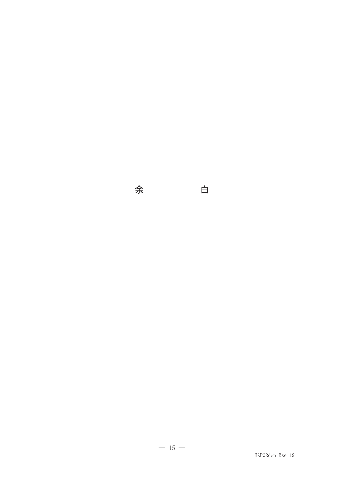
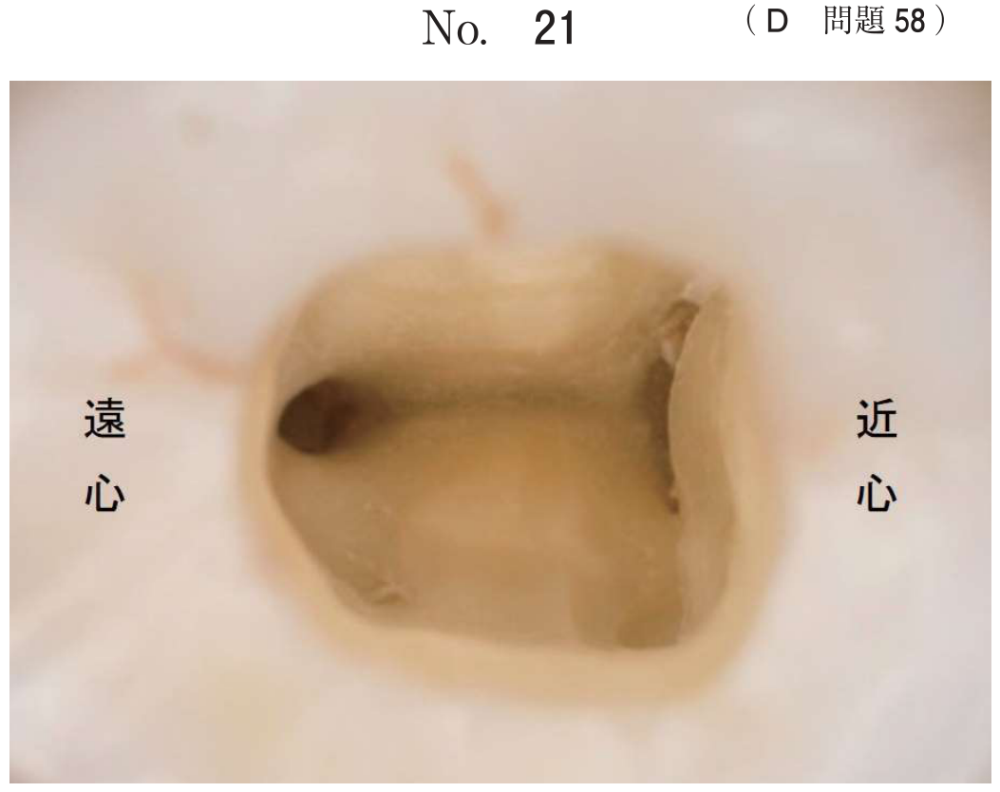
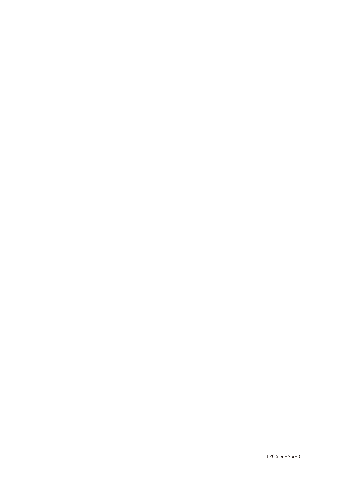
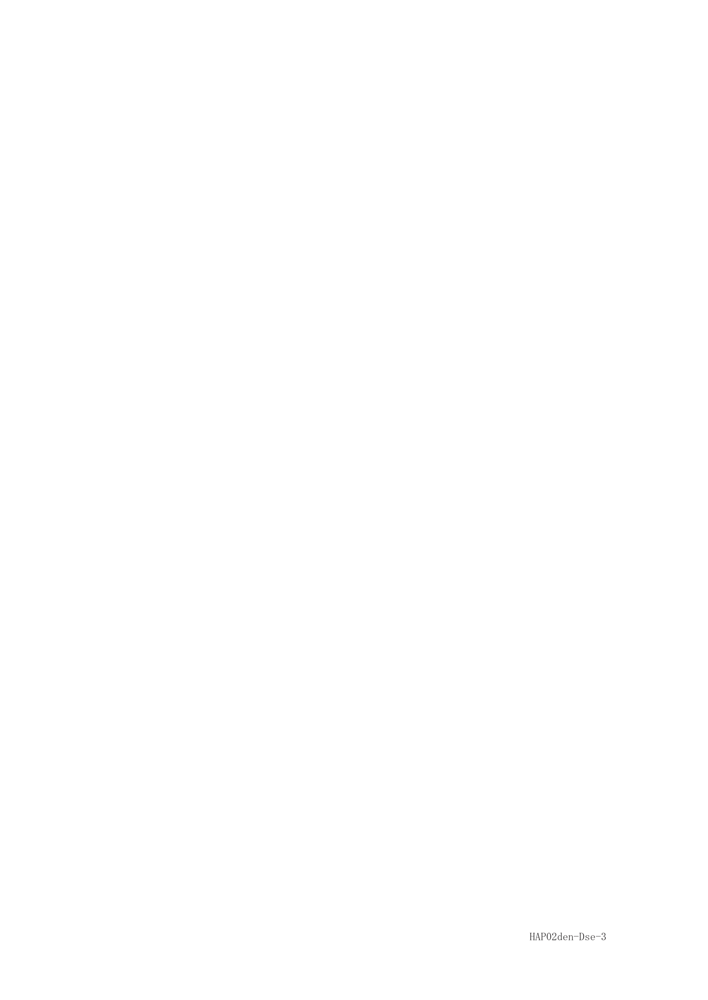
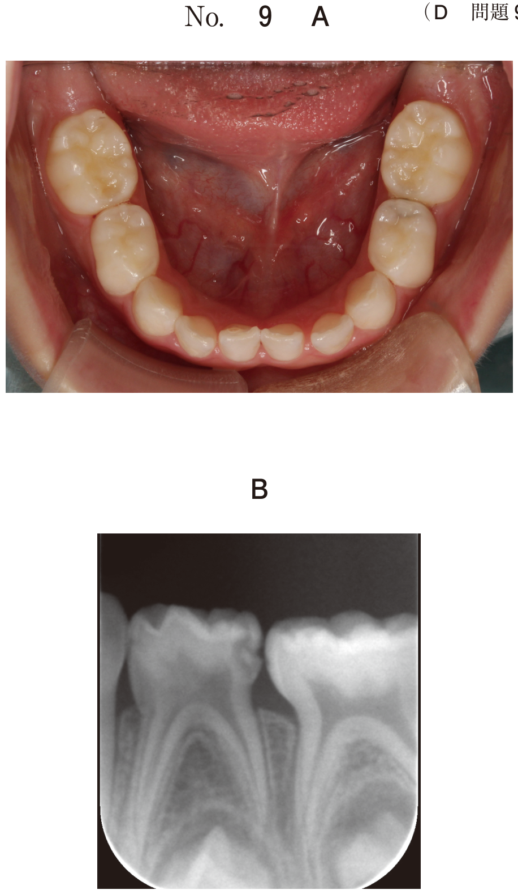
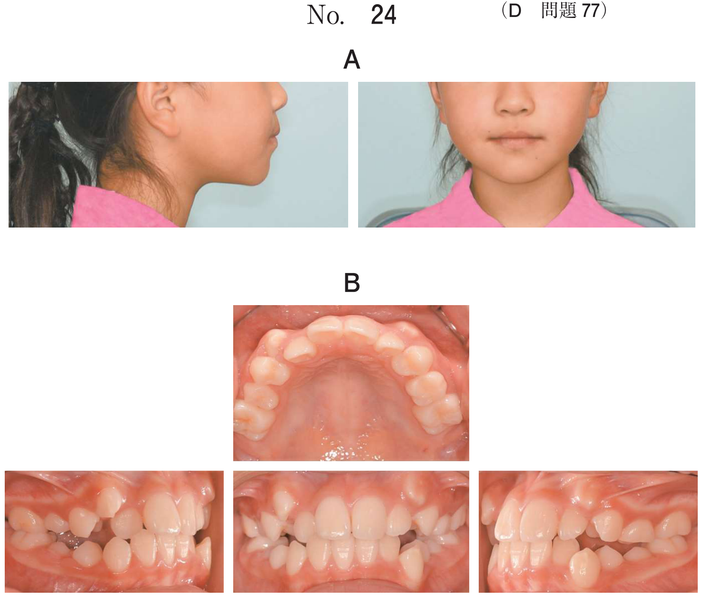

萌出異常
正中離開の診査（頻出）
- Blanch test：上唇小帯付着位置異常の診断
- 口内法エックス線検査：過剰歯の有無を確認
Blanch test
- 口唇を上方に牽引し、白くなった部分（貧血帯）まで小帯が付着していれば異常
- 上唇小帯の高位付着は正中離開の原因となる
- 対応：多くは増齢で改善→経過観察、肥厚が著しい場合は上唇小帯切除
萌出性腐骨（頻出）
| 項目 | 内容 |
|---|---|
| 定義 | 大臼歯萌出時に吸収されずに残った歯槽骨の一部 |
| 好発部位 | 第一大臼歯（6歳臼歯）に多い |
| 症状 | 歯みがき時の出血、違和感、軽い咬合痛 |
| 対応 | 違和感があれば除去する |
萌出性腐骨は病的なものではなく、生理的現象として生じる
萌出遅延・萌出障害の対応
| 原因 | 対応 |
|---|---|
| 過剰歯による障害 | 過剰歯の抜歯 |
| 歯肉の被覆 | 開窓 |
| 埋伏・位置異常 | 開窓牽引 |
| 先行乳歯の晩期残存 | 乳歯の抜歯（＋保隙装置） |
上顎犬歯の萌出障害
- 放置すると埋伏や晩期残存が生じる
- X線で犬歯の萌出方向を確認し、早期対応が必要
過去問
7歳の女児。正中離開を主訴として来院した。初診時の口腔内写真（別冊No.19）を別に示す。まず行うべきことはどれか。2つ選べ。

b 歯列模型分析
c 歯周ポケット検査
d 口内法エックス線検査
e 歯科用コーンビームCT
【解説】正中離開の原因特定にはBlanch test（上唇小帯の異常）と口内法エックス線検査（過剰歯の有無）が有効。
7歳の男児。上の前歯に隙間があることを主訴として来院した。初診時の口腔内写真（別冊No.33）を別に示す。原因の特定に有効なのはどれか。2つ選べ。

b 超音波検査
c Blanch test
d 口内法エックス線撮影
e レーザー蛍光強度測定
【解説】107B19と同様のパターン。正中離開の原因特定にはBlanch testと口内法エックス線撮影。
6歳の女児。奥歯の中央付近に硬い物があり、歯みがき時に出血しやすいことを主訴として来院した。初診時の口腔内写真（別冊No.3）を別に示す。矢印で示した硬固物で考えられるのはどれか。1つ選べ。

b 象牙質
c 歯槽骨
d エナメル質
e セメント質
【解説】6歳で第一大臼歯萌出時に見られる硬固物は萌出性腐骨（歯槽骨）。大臼歯萌出時に吸収されずに残った歯槽骨の一部である。
6歳の男児。噛む時に軽い痛みがあることを主訴として来院した。下顎右側の奥歯に硬いものがあるという。矢印で硬固物を示した初診時の口腔内写真（別冊No.14A）と摘出した硬固物の病理組織像（別冊No.14B）を別に示す。考えられるのはどれか。1つ選べ。

b 象牙質
c 食物残渣
d エナメル質
e セメント質
【解説】萌出性腐骨。病理組織像で骨組織が確認できる。「腐骨」という表現は壊死した骨を指すが、萌出性腐骨も同様に吸収されずに残った歯槽骨である。
10歳の男児。上顎右側乳犬歯部の交換の異常を近医で指摘され来院した。初診時のエックス線写真（別冊No.3）を別に示す。放置すると生じると考えられるのはどれか。2つ選べ。

b 上顎右側乳犬歯の骨性癒着
c 上顎右側乳犬歯の晩期残存
d 上顎右側犬歯の低位唇側転位
e 上顎右側第一小臼歯の近心傾斜
【解説】上顎犬歯の萌出障害を放置すると埋伏と先行乳歯の晩期残存が生じる。
8歳の男児。下顎右側第一大臼歯が生えてこないことを主訴として来院した。学校の歯科健診で指摘されたという。初診時の口腔内写真（別冊No.32A）とエックス線写真（別冊No.32B）を別に示す。適切な対応はどれか。1つ選べ。


b 下顎右側第二乳臼歯の抜去
c 下顎右側第一大臼歯の開窓牽引
d 下顎右側第一大臼歯の再植
e 下顎右側第一大臼歯の抜去
【解説】第一大臼歯の萌出障害に対しては開窓牽引を行う。歯肉の被覆と位置異常があるため、開窓して矯正的に牽引する。
8歳の女児。上顎右側中切歯の萌出遅延を主訴として来院した。初診時のエックス線写真（別冊No.14）を別に示す。上顎右側中切歯に対する対応で適切なのはどれか。1つ選べ。

b 義歯装着
c 開 窓
d 再 植
e 抜 歯
【解説】X線で中切歯の位置は正常だが歯肉に被覆されている場合は開窓を行い萌出を促す。
3歳の女児。上顎左側乳中切歯部の精査を希望して来院した。初診時の口腔内写真（別冊No.33A）とエックス線画像（別冊No.33B）を別に示す。適切な対応はどれか。1つ選べ。


b └Aの開窓牽引
c └Aの再植
d └Aの抜歯後、保隙装置装着
e └Aの抜歯後、└1の牽引
【解説】乳歯の萌出異常で後継永久歯への影響が懸念される場合は乳歯抜歯＋保隙装置が適切。3歳では永久歯の萌出はまだ先なので保隙が必要。